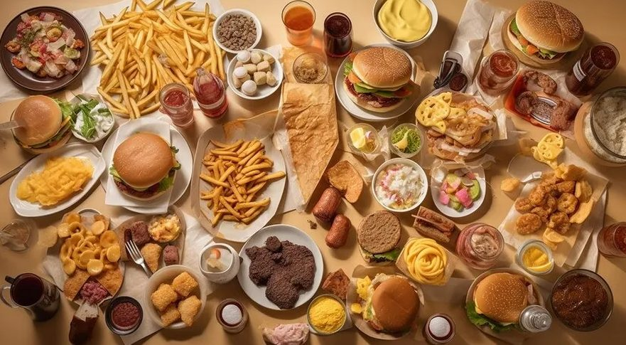

Os malefícios de uma má alimentação
A má alimentação é responsável por diversas doenças, como por exemplo, o aparecimento de doenças cardiovasculares, hipertensão, diabetes, câncer, osteoporose, pedra na vesícula, além da obesidade. O consumo exagerado de alguns alimentos e bebidas podem gerar diversos problemas, diminuir a expectativa de vida e até matar aos poucos. E quais são esses alimentos? E o que eles podem causar?
mas das coisas que contribui para a má alimentação são os: Alimentos ultraprocessado. Mas o que são eles?
Alimentos ultraprocessados são formulações industriais feitas inteira ou majoritariamente de substâncias retiradas de alimentos, derivadas de constituintes de alimentos ou sintetizadas em laboratório com base em petróleo e carvão. Geralmente possuem alto teor de gorduras, açúcares ou sódio. Aqui estão alguns desses alimentos:
são os alimentos ultraprocessados mais consumidos no mundo?
- refrigerantes
- salgadinhos de pacote
- Biscoitos recheados
- Chocolates
- cereais
- Macarrão instantâneo
- Embutidos como salsicha e nuggets
PRINCIPAIS RISCOS DA MÁ ALIMENTÇÃO
Doenças cardiovascularesAumento do risco de doenças cardíacas, pressão alta e acidente vascular cerebral (AVC)devido ao alto teor de gordura saturada, açúcar e sódio.
obesidade:A combinação de alto teor de açúcar, gordura e baixo teor de fibras em muitos ultraprocessados contribui para o ganho de peso e obesidade. Diabetes tipo2: